본 장에서는 SQL 연산에 대해 설명한다. 먼저 연산자에 대해 설명하고 다음으로 일반 연산식과 조건식에 대해 설명한다. 각 연산식을 설명할 때는 도식적 문법을 사용하여 설명한다.
SQL 문장 내에는 여러 가지 연산식이 포함된다. 연산식은 연산자(Operator), 피연산자(Operand), 함수(Function) 등으로 구성된다. 연산식은 연산식 내의 모든 피연산자에 어떤 값을 대입하면 해당 연산 결과를 반환한다.
연산식은 크게 두 가지로 구분할 수 있는데, 일반 연산식과 조건식이 이에 해당한다.
-
일반 연산식
-
논리(Logical) 연산자와 비교(Comparison) 연산자를 제외한 모든 연산자가 포함된다.
-
결과 값으로 임의의 산술 값, 문자열, 리스트 등이 반환된다.
-
-
조건식
-
논리 연산자 또는 비교 연산자가 포함된다.
-
결과 값으로 TRUE, FALSE, UNKNOWN이 반환된다.
-
위의 그림을 통해 도식을 해석하는 방법을 설명하면 다음과 같다.
| 도형 | 설명 |
|---|---|
| 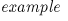 | 전체 문법을 대표하는 이름은 왼쪽 위에 나타낸다. [그림 3.1]의 문법을 대표하는 이름은 example이다. |
| 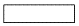 | 사각형 내의 문자는 문장에 포함된 문법 요소를 나타내며, 적절한 다른 문자열로 대치되어야 한다. [그림 3.1]에서는 option, value, choice1, choice2 등이 여기에 해당한다. |
| 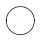 | 동그라미 안의 문자는 키워드(Keyword) 또는 연산식 기호로, 반드시 문장 내에 그대로 포함되어야 한다. [그림 3.1]에서는 소괄호(( ))와 콤마(,)가 여기에 해당한다. |
문장을 완성하는 순서는 화살표를 따라가면 된다. 뒤쪽으로 향하는 화살표는 0번 이상 포함됨을 의미한다. 여러 갈래로 갈라지는 화살표는 여러 가지 중에 하나를 선택해야 함을 의미한다. [그림 3.1]에서는 option은 반드시 포함되어야 하며, 콤마(,)는 포함되지 않거나 한 번 이상 포함될 수 있다. 소괄호(( ))는 반드시 포함된다. value는 반드시 한 번 이상 포함되어야 하며, 콤마가 포함되면 value는 한 번 더 포함된다. choice1과 choice2 중의 하나만 문장에 포함된다. |
다음에 나열된 문장은 위의 [그림 3.1]의 도식을 바탕으로 완성된 유효한 연산식의 예이다.
option1 (value1) choice1 option1 (value1, value2) choice1 option1 (value1, value2) choice2 option1 (value1) choice2
본 절에서는 SQL 문장 내에서 사용되는 연산자에 대해 설명한다.
각 연산자를 포함한 연산식에 대해서는 “3.3. 연산식”과 “3.4. 조건식”에서 설명한다.
SQL 문장 내에서 사용되는 일반 연산자는 산술(Arithmetic) 연산자, 문자열(String) 연산자, 집합(Set) 연산자 등이 있다.
-
산술 연산자
산술 연산자는 사칙연산을 수행하기 위한 연산자이다. 산술 연산자에는 덧셈, 뺄셈, 곱셈, 나눗셈을 위한 네 가지 이항(Binary) 연산자와 양수, 음수를 나타내기 위한 단항(Unary) 연산자가 있다.
-
문자열 연산자
문자열 연산자는 접합(Concatenate) 연산자 하나뿐이다. 접합 연산자(||)는 두 개의 문자열을 하나로 연결하기 위한 연산자이다.
다음은 두 개의 문자열 'ABC'와 'DEF'를 접합 연산자를 사용해 하나로 접합시키는 예이다.
'ABC' || 'DEF' = 'ABCDEF'
-
집합 연산자
집합 연산자는 두 개의 질의 결과에 대한 연산자이며, 피연산자로 항상 SELECT 문의 결과를 받는다. 집합 연산자는 테이블을 대상으로 직접 수행되지 않는다. 집합 연산자는 연산 결과 0개 이상의 로우로 구성된 하나의 테이블을 반환한다.
다음의 표는 Tibero에서 제공하는 집합 연산자와 각 연산자의 연산 결과를 설명한다.
산술 연산자와 문자열 연산자를 사용할 때는 연산 결과가 미리 예측한 범위 내의 값이 되는지 확인해야 한다. 예를 들어 NUMBER(3,0) 타입으로 선언된 컬럼에 산술 연산 결과 1234.0을 저장하려 하거나, VARCHAR(5) 타입의 컬럼에 접합 연산 결과 'ABCDEF'를 저장하려 하면 에러가 발생한다.
산술 데이터와 문자열 데이터에 대한 복잡한 연산은 별도의 내장 함수(Built-in Function)로 수행할 수 있다. Tibero에서 제공하는 내장 함수는 “제4장 함수”에서 자세하게 설명한다.
조건식에 포함되는 연산자는 논리 연산자와 비교 연산자가 있다.
-
논리 연산자는 피연산자로 항상 조건식이 온다. Tibero에서 제공하는 논리 연산자는 NOT, AND, OR이다. NOT 연산자는 단항 연산자이며, AND와 OR 연산자는 이항 연산자이다.
Tibero에서의 논리 연산자는 일반적인 논리 연산자와 다른 점이 있다. 논리 연산의 결과로 TRUE, FALSE 외에 UNKNOWN이 반환될 수 있다는 점이다.
아래의 표는 각각 NOT, AND, OR 연산자에 대하여 피연산자가 TRUE, FALSE, UNKNOWN 값을 가질 때의 진리표(Truth Table)을 보인 것이다. AND와 OR 연산자는 교환법칙이 성립한다.
-
비교 연산자는 피연산자로 임의의 산술 값이나 문자열, 리스트 등이 올 수 있다. 비교 연산자는 단일 값 간의 비교와 단일 값과 리스트와의 비교를 위한 연산자로 나눌 수 있다.
다음의 표는 Tibero에서 제공하는 단일 값 간의 산술 비교 연산자를 나타낸다.
연산자 설명 = 두 값이 서로 같은지를 나타내는 이항 연산자 !=, ^=, ~=, <> 두 값이 서로 다른지를 나타내는 이항 연산자 >, < 두 값의 대소비교를 통해 크거나 작은지를 나타내는 이항 연산자 >=, <= 두 값의 대소비교를 통해 크거나 같은지 또는 작거나 같은지를 나타내는 이항 연산자 단일 값과 리스트와의 비교를 위한 연산자로는 산술 비교 연산자와 ANY, SOME, ALL이 결합된 연산자(> ALL, = SOME 등)과 IN 연산자 등이 있다. 이러한 비교 연산자를 포함하는 조건식의 의미와 문법에 대해서는 “3.4. 조건식”에서 구체적으로 설명한다.
-
연산자 우선순위
하나의 연산식 내에 여러 연산자가 혼용될 수 있다. 이러한 경우 어떤 연산자를 먼저 계산할 것인지에 대한 순서가 정해져 있다. 이러한 순서를 연산자 우선순위(Operator Precedence)라고 한다.
다음의 표는 Tibero에서 제공하는 연산자 간의 우선순위를 나타낸다. 위쪽의 연산자일수록 우선순위가 높다.
우선순위 연산자 설명 1 +, - 숫자의 부호를 나타내는 단항 연산자 2 *, / 산술 연산자 3 +, - 산술 연산자 4 =, !=, ^=, ~=, <>, <, >, <=, >= 비교 연산자 5 LIKE, BETWEEN, IN, EXISTS, IS NULL 비교 연산자 6 NOT 논리 연산자(단항 연산자) 7 AND 논리 연산자 8 OR 논리 연산자 산술 연산자(+, -, *, /)와 논리 연산자(AND, OR)의 경우 여러 개가 나열될 수 있다. 이런 경우 우선순위가 같다면 왼쪽에 있는 연산자부터 먼저 계산한다. 비교 연산자와 단항 연산자는 여러 개가 나열될 수 없다. 연산자 간의 우선순위에 관계 없이 괄호로 둘러싸인 식이 먼저 계산된다. 중첩된 괄호의 경우 안쪽 괄호의 식을 먼저 계산한다. 계산 순서를 확실히 나타내기 위한 경우에 괄호를 사용하는 것이 좋다.
연산식은 여러 가지 SQL 문장 내에서 사용된다. 본 장의 개요 부분에서 설명했듯이 연산식은 연산자와 피연산자, 함수 등으로 구성된다.
다음은 연산식을 포함하는 SQL 문장이다.
-
SELECT 문 내의 SELECT 절(리스트)
-
SELECT, UPDATE, DELETE 문 내의 WHERE 절(조건식)
-
SELECT 문 내의 HAVING 절(조건식)
-
SELECT 문 내의 ORDER BY 절(리스트)
-
INSERT 문 내의 VALUES 절(리스트)
-
UPDATE 문 내의 SET 절(할당 연산식)
리스트 형태의 연산식인 경우에 SELECT 문의 SELECT 절과 ORDER BY 절에서는 괄호로 묶여지지 않으나, INSERT 문의 VALUES 절에서는 반드시 괄호로 묶어야 한다. UPDATE 문의 SET 절에 포함되는 할당 연산식은 등호(=)를 이용한 비교 연산식과 동일한 문법을 가지나, 등호의 왼쪽에는 반드시 컬럼의 이름이 와야 한다.
Tibero에서 사용할 수 있는 연산식은 단순 연산식(Simple Expression), 복합 연산식(Compound Expression), 함수(Function), 부질의 연산식(Subquery Expression), 리스트(List) 등이 있다.
연산식의 세부 내용은 다음과 같다.
-
문법
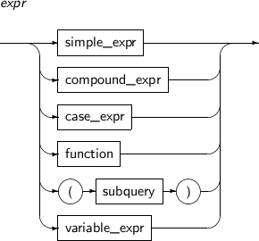 -
구성요소
구성요소 설명 simple_expr 단순 연산식을 의미한다. 자세한 내용은 “3.3.2. 단순 연산식”을 참고한다. compound_expr 복합 연산식을 의미한다. 자세한 내용은 “3.3.3. 복합 연산식”을 참고한다. case_expr CASE 연산식을 의미한다. 자세한 내용은 “3.3.4. CASE 연산식”을 참고한다. function 함수를 의미한다. 자세한 내용은 “3.3.5. 함수”를 참고한다. subquery 부질의 연산식을 의미한다. 부질의 연산식은 항상 소괄호(( ))로 묶인다.
자세한 내용은 “3.3.6. 부질의 연산식”을 참고한다.
variable_expr 변수를 의미한다. 자세한 내용은 “3.3.7. 변수”를 참고한다.
연산식 내의 피연산자의 데이터 타입이 연산자가 요구하는 타입이 아닌 경우 Tibero에서는 가능하면 데이터 타입의 변환을 수행한다.
다음의 두 라인은 데이터 타입의 변환의 예이다.
'30' + 50 = 80 'YEAR' || 2004 = 'YEAR2004'
첫 번째 라인에서 덧셈(+) 연산자의 피연산자는 NUMBER 타입이어야 하나 문자열 '30'이 온 경우 이를 먼저 NUMBER 타입으로 변환한 후에 계산하게 된다. 두 번째 라인에서 접합(||) 연산자의 피연산자는 문자열 타입이어야 하나 NUMBER 타입의 2004가 온 경우 이를 먼저 문자열로 변환한 후에 연산을 수행한다.
모든 데이터 타입 간의 변환이 가능한 것은 아니며, 연산식의 계산 과정에서 데이터 타입의 변환이 불가능한 경우에는 에러를 반환한다. 데이터 타입의 변환이 가능하더라도 실제 값에 따라 에러가 발생할 수 있다. 예를 들어 문자열 '1234'는 NUMBER 타입으로 변환 가능하나, 'ABC'는 변환 불가능하다. 대용량 객체는 데이터 타입의 변환이 불가능하다.
다음의 표는 데이터 타입의 변환이 가능한 조합을 보여주고 있다. 세로로 나열된 타입이 변환 전의 타입이며, 가로로 나열된 타입이 변환 후의 타입이다.
데이터 타입 | NUMBER | CHAR | VARCHAR | RAW | DATE | TIME | TIMESTAMP | INTERVAL | LONG | LONG RAW | BLOB | CLOB | ROWID | BINARY_ FLO AT | BINARY_ DOU BLE |
|---|---|---|---|---|---|---|---|---|---|---|---|---|---|---|---|
| NUMBER | - | O | O | - | - | - | - | - | O | - | - | O | - | O | O |
| CHAR | O | - | O | O | O | O | O | O | O | O | O | O | O | O | O |
| VARCHAR | O | O | - | O | O | O | O | O | O | O | O | O | O | O | O |
| RAW | - | O | O | - | - | - | - | - | O | O | O | O | - | - | - |
| DATE | - | O | O | - | - | - | O | - | O | - | - | - | - | - | - |
| TIME | - | O | O | - | - | - | - | - | O | - | - | - | - | - | - |
| TIMESTAMP | - | O | O | - | O | - | - | - | O | - | - | - | - | - | - |
| INTERVAL | - | O | O | - | - | - | - | - | O | - | - | - | - | - | - |
| LONG | - | O | O | O | - | - | - | - | - | O | - | O | - | - | - |
| LONG RAW | - | O | O | O | - | - | - | - | O | - | O | - | - | - | - |
| BLOB | - | - | - | O | - | - | - | - | - | O | - | - | - | - | - |
| CLOB | - | O | O | - | - | - | - | - | O | - | - | - | - | - | - |
| ROWID | - | O | O | - | - | - | - | - | O | - | - | - | - | - | - |
| BINARY_ FLOAT | O | O | O | - | - | - | - | - | - | - | - | - | - | - | O |
| BINARY_ DOUBLE | O | O | O | - | - | - | - | - | - | - | - | - | - | O | - |
단순 연산식은 연산자 또는 함수를 포함하지 않고 하나의 피연산자만으로 이루어진 연산식이다. 도식에 나타난 것처럼 피연산자는 특정 테이블 컬럼, ROWID 타입, 문자열 또는 수치 값, NULL 값 등이다.
단순 연산식에서 스키마 이름, 테이블과 뷰의 이름, 컬럼 이름, NULL은 영문 대문자와 소문자를 구분하지 않는다. 반면에, 작은따옴표(' ')로 둘러싸인 문자열은 대소문자를 구분한다.
단순 연산식의 세부 내용은 다음과 같다.
-
문법
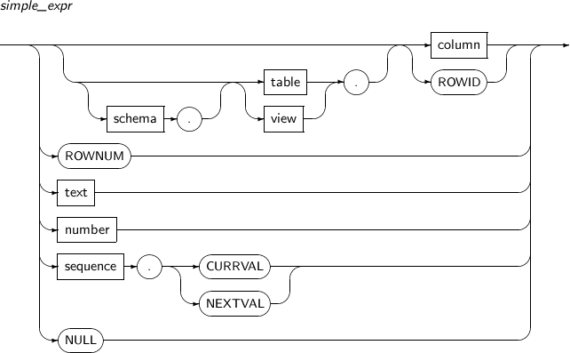 -
구성요소
구성요소 설명 schema 스키마의 이름을 의미한다. table 테이블의 이름을 의미한다. view 뷰의 이름을 의미한다. column 컬럼의 이름을 의미한다. text 문자열을 의미한다. number 수치 데이터 값을 의미한다. sequence 시퀀스의 이름을 의미한다.
복합 연산식은 하나 이상의 연산식을 결합한 복잡한 형태의 연산식이다.
복합 연산식의 세부 내용은 다음과 같다.
-
문법
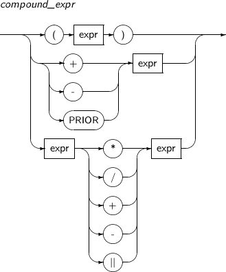 -
구성요소
구성요소 설명 expr expr은 일반적인 연산식을 의미한다. 자세한 내용은 “3.3. 연산식”을 참고한다. +, - 숫자의 부호를 나타내는 단항 연산자(+, -)를 의미한다. PRIOR 로우 간의 상하 관계를 나타내기 위한 연산자이다. 자세한 내용은 “5.5. 계층 질의”를 참고한다. *, /, +, -, || 산술 연산자(*, /, +, -)와 문자열 접합 연산자(||)를 의미한다.
CASE 연산식은 SQL 문장에서 IF... THEN ... ELSE 로직을 표현한다. simple_when_clause를 사용하면 expr, comparison_expr, return_expr 그리고 else_clause를 합해서 최대 65535까지 표현식을 사용할 수 있다. searched_when_clause를 사용하면 condition, return_expr, else_clause를 합해서 최대 65535까지 표현식을 사용할 수 있다.
CASE 연산식의 세부 내용은 다음과 같다.
-
문법
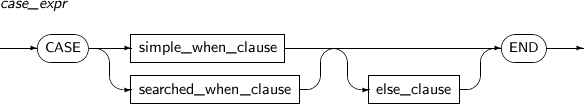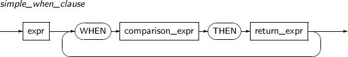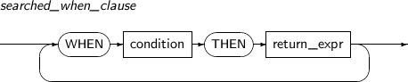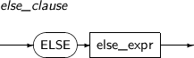 -
구성요소
구성요소 설명 simple_when_clause WHEN ... THEN 쌍에서 명시된 순서대로 comparison_expr과 expr을 비교하고 결과가 같다면 해당 THEN 절의 return_expr을 반환한다.
모든 comparison_expr과의 비교가 실패한다면. else_clause에 있는 else_expr이 반환된다. else_clause가 없다면 NULL이 반환된다.
searched_when_clause WHEN ... THEN 쌍에 대해서 명시된 순서대로 condition을 평가하게 되고 결과가 TRUE이면 해당 THEN 절의 return_expr을 반환한다.
TRUE로 평가되는 condition이 없다면 else_clause에 명시된 else_expr이 반환된다. else_clause가 없다면 NULL이 반환된다.
comparison_expr 비교 연산자를 의미한다. expr과 모든 comparison_expr은 동일한 타입이어야 한다. 자세한 내용은 “3.2.2. 조건식에 포함되는 연산자”를 참고한다. condition 조건식을 의미한다. 자세한 내용은 “3.4. 조건식”을 참고한다. return_expr simple_when_cluase의 비교 결과와 searched_when_clause의 조건식을 만족할 경우에 return_expr을 반환한다. 모든 return_expr과 else_expr도 동일한 타입이어야 한다. else_clause simple_when_clause의 비교 결과와 searched_when_cluase의 조건식을 만족하지 못할 경우에 else_clause에 있는 else_expr이 반환된다. -
예제
다음은 CASE 연산식의 예이다.
SELECT CASE WHEN age > 19 THEN 'adult' ELSE 'minor' END FROM people;
함수 연산식은 함수 이름과 괄호 안에 포함된 0개 이상의 파라미터로 구성된다. 파라미터는 콤마(,)로 구분하며, 파라미터가 0개인 경우에는 괄호를 생략할 수도 있다. Tibero에서는 다양한 단일 로우 함수(Single Row Function)와 집단 함수(Aggregate Function)를 제공하고 있다.
다음은 함수를 사용한 예이다.
ROUND(123.456, 2) LENGTH(ADDR) SYSDATE AVG(EMP.SALARY)
부질의 연산식은 연산식 내에 SELECT 문이 포함된 것을 말한다. 일반적으로, SELECT 문은 1개 이상의 컬럼 값을 갖는 0개 이상의 로우를 반환한다. 하지만, 연산식 내에 포함되는 SELECT 문은 반드시 1개의 컬럼 값을 갖는 1개의 로우를 반환해야 한다. 만약 이러한 조건이 충족되지 않으면 연산식이 계산되는 중에 에러를 반환한다.
다음은 부질의 연산식의 예이다.
(SELECT MAX(SALARY) FROM EMP WHERE DEPTNO = 5) * 1.05
부질의 연산식은 항상 괄호 안에 둘러싸여야 한다. SELECT 문의 SELECT 절에 1개의 컬럼만 포함되어 있고, 질의 실행 결과 최댓값 1개만 반환된다. 따라서, 에러 없이 계산할 수 있다.
부질의 연산식은 SQL 문장 내에서 단순 연산식이 올 수 있는 대부분의 위치에 올 수 있다. 하지만, 아래와 같은 위치에는 부질의 연산식이 올 수 없다.
-
SELECT 문의 GROUP BY 절
-
컬럼의 디폴트 값
-
CHECK 제약조건의 조건식
변수는 호스트 변수와 지시자, 지시자 변수로 구성된다. tbESQL 문장에 사용하며 프로그램의 데이터 입출력에 사용된다.
변수의 세부 내용은 다음과 같다.
-
문법
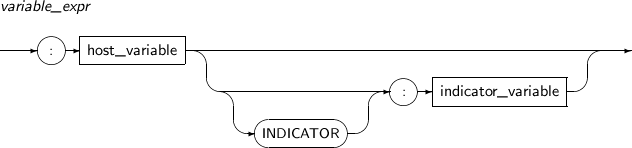 -
구성요소
구성요소 설명 host_variable 호스트 변수를 의미한다. 콜론(:)과 함께 쓰인다.
데이터베이스에서는 데이터의 처리 결과를 저장하기 위해 사용하고, 애플리케이션 프로그램에서는 변수로 사용된다.
INDICATOR 지시자를 의미한다. indicator_variable 지시자 변수를 의미한다.
호스트 변수와 관계되어 사용하는 변수로 출력되는 호스트 변수의 NULL 값 확인 및 에러 검사를 하기 위해 사용한다.
호스트 변수와 마찬가지로 콜론(:)과 함께 쓰인다.
참고
변수에 관한 자세한 내용은 사용하는 프로그래밍 언어에 따라 "Tibero tbESQL/C 안내서"와 "Tibero tbESQL/COBOL 안내서"를 참고한다.
리스트는 하나 이상의 연산식을 콤마(,)로 구분하여 나열한 것이다. 리스트는 SQL 문장 내의 위치에 따라 괄호에 둘러싸일 수도 있다. SELECT, UPDATE, DELETE 문장의 WHERE 절에 포함되는 리스트와 INSERT 문장의 VALUES 절에 포함되는 리스트는 괄호에 둘러싸인다.
리스트의 세부 내용은 다음과 같다.
-
문법
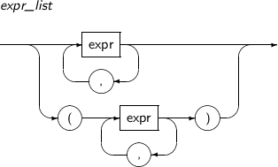 -
구성요소
구성요소 설명 expr expr은 일반적인 연산식을 의미한다. 자세한 내용은 “3.3. 연산식”을 참고한다. -
예제
다음은 조건식의 예이다.
EMPNO, ENAME, ADDR (35, 'John', 'Houston') (20, 30, 50)
조건식은 SELECT, UPDATE, DELETE 문장의 WHERE 절과 SELECT 문의 HAVING 절에 포함된다. Tibero에서 사용할 수 있는 조건식은 단순 조건식(Simple Condition), 그룹 조건식(Group Condition), 복합 조건식(Compound Condition), 비교 조건식(Comparison Condition) 등이 있다. 비교 조건식은 비교 연산자에 따라 BETWEEN, EXISTS, IN, IS NULL, LIKE 조건식 등이 있다.
조건식의 세부 내용은 다음과 같다.
-
문법
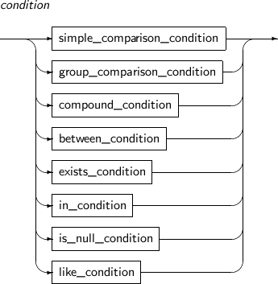 -
구성요소
구성요소 설명 simple_comparison_condition 단순 조건식을 의미한다. 자세한 내용은 “3.4.1. 단순 조건식”을 참고한다. group_comparison_condition 그룹 조건식을 의미한다. 자세한 내용은 “3.4.2. 그룹 조건식”을 참고한다. compound_condition 복합 조건식을 의미한다. 자세한 내용은 “3.4.3. 복합 조건식”을 참고한다. between_condition BETWEEN 조건식을 의미한다. 자세한 내용은 “3.4.4. BETWEEN 조건식”을 참고한다. exists_condition EXISTS 조건식을 의미한다. 자세한 내용은 “3.4.5. EXISTS 조건식”을 참고한다. in_condition IN 조건식을 의미한다. 자세한 내용은 “3.4.6. IN 조건식”을 참고한다. is_null_condition IS NULL 조건식을 의미한다. 자세한 내용은 “3.4.7. IS NULL 조건식”을 참고한다. like_condition LIKE 조건식을 의미한다. 자세한 내용은 “3.4.8. LIKE 조건식”을 참고한다. regexp_like_condition REGEXP_LIKE 조건식을 의미한다. 자세한 내용은 “3.4.9. REGEXP_LIKE 조건식”을 참고한다.
단순 조건식은 두 개의 데이터 값을 비교하는 조건식이다. 단순 조건식의 피연산자는 다음의 도식에서처럼 임의의 일반 연산식이 올 수 있다. 피연산자 중의 하나라도 NULL이 포함된 단순 조건식은 항상 UNKNOWN을 반환한다.
단순 조건식의 세부 내용은 다음과 같다.
-
문법
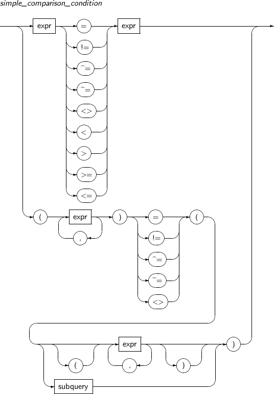 -
구성요소
구성요소 설명 expr expr은 일반적인 연산식을 의미한다. 자세한 내용은 “3.3. 연산식”을 참고한다. subquery 부질의를 의미한다. 자세한 내용은 “3.3.6. 부질의 연산식”을 참고한다. =, !=, ^=, ~=, <>, <, >, >=, <= 비교연산자이다. 자세한 내용은 “3.2. 연산자”를 참고한다.
그룹 조건식은 하나의 데이터 값과 리스트에 포함된 값을 비교하는 연산을 수행한다.
그룹 조건식의 세부 내용은 다음과 같다.
-
문법
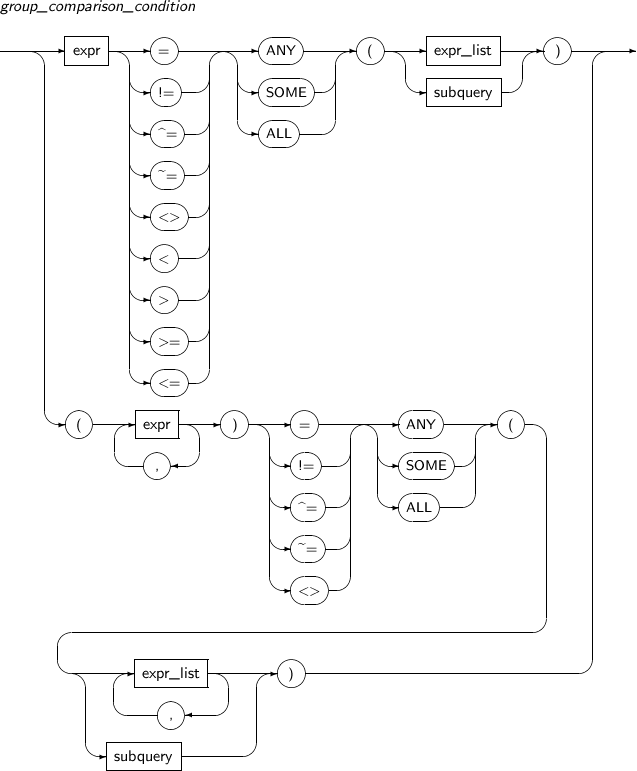 -
구성요소
구성요소 설명 expr expr은 일반적인 연산식을 의미한다. 자세한 내용은 “3.3. 연산식”을 참고한다. expr_list expr_list는 리스트를 의미한다. 자세한 내용은 “3.3.8. 리스트”를 참고한다. subquery 부질의를 의미한다. 자세한 내용은 “3.3.6. 부질의 연산식”을 참고한다. ANY ANY가 포함된 그룹 조건식의 경우 왼쪽의 데이터 값이 오른쪽의 리스트 내의 값 중 최소한 하나만 단순 비교 연산자를 만족하면 그룹 조건식은 TRUE를 반환한다. SOME SOME이 포함된 그룹 조건식의 경우 ANY와 마찬가지로 왼쪽의 데이터 값이 오른쪽의 리스트 내의 값 중 최소한 하나만 단순 비교 연산자를 만족하면 그룹 조건식은 TRUE를 반환한다. ALL ALL이 포함된 그룹 조건식의 경우 왼쪽의 데이터 값이 오른쪽의 리스트 내의 모든 값에 대해 단순 비교 연산자를 만족해야 그룹 조건식이 TRUE를 반환한다. -
예제
다음은 그룹 조건식의 예이다.
EMPNO = ANY (35, 54, 27, 69) SALARY * 1.05 >= ALL (SELECT SALARY FROM EMP WHERE DEPTNO = 5)
위의 예에서 첫 번째 줄은 컬럼 EMPNO 값이 리스트 내의 값 중 하나라도 동일하면 TRUE, 그렇지 않으면 FALSE를 반환한다. 두 번째 줄은 컬럼 SALARY 값에 1.05를 곱한 값이 오른쪽 부질의 결과로 반환되는 모든 값보다 크거나 같으면 TRUE, 그렇지 않으면 FALSE를 반환한다.
오른쪽 리스트 내에 NULL이 포함된 경우 ANY 연산자가 포함된 그룹 조건식은 항상 TRUE 또는 UNKNOWN을 반환하고, ALL 연산자가 포함된 그룹 조건식은 항상 FALSE 또는 UNKNOWN을 반환한다.
예를 들어 다음의 두 줄은 같은 결과를 반환한다.
DEPTNO != ALL (4, 5, NULL) (DEPTNO != 4) AND (DEPTNO != 5) AND (DEPTNO != NULL)
만약 컬럼 DEPTNO 값이 4 또는 5인 경우 두 번째 줄에서 NULL과 비교하는 마지막 단순 조건식의 결과가 UNKNOWN이 되고, 전체 조건식의 결과도 AND 연산자로 연결되어 있으므로 UNKNOWN이 된다.
복합 조건식은 복합 연산식과 마찬가지로 하나 이상의 조건식을 결합한 복잡한 형태의 조건식이다. 복합 조건식은 괄호로 묶은 조건식, NOT 연산자를 붙인 연산식, 논리 연산자(AND, OR)로 결합한 조건식 등이 있다.
복합 조건식의 세부 내용은 다음과 같다.
-
문법
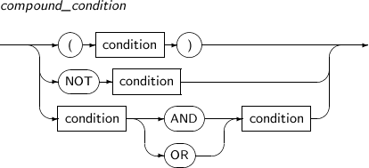 -
구성요소
구성요소 설명 condition condition은 조건식을 의미하며, 자세한 내용은 “3.4. 조건식”의 도입부에 기술되어 있다. NOT, AND, OR 논리 연산자 NOT, AND, OR이다. 자세한 내용은 “3.2.2. 조건식에 포함되는 연산자”를 참고한다.
BETWEEN 연산자는 왼쪽의 수치 값이 오른쪽의 두 수치 값 사이에 존재하는지 비교하는 연산자이다.
BETWEEN 조건식의 세부 내용은 다음과 같다.
-
문법
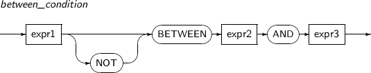 -
구성요소
구성요소 설명 expr1, expr2, expr3 expr1, expr2, expr3은 모두 수치 값을 반환하는 임의의 연산식이다.
expr1, expr2, exrp3 중에서 하나라도 NULL이 오면, BETWEEN 조건식의 결과는 항상 FALSE 또는 UNKNOWN을 반환한다.
BETWEEN ... AND BETWEEN 연산자는 항상 AND를 동반하며, 왼쪽의 수치 값이 오른쪽의 두 수치 값 사이에 존재하는지 비교하는 연산자이다. NOT BETWEEN 예약어 앞에 NOT이 오면 BETWEEN 연산자 결과에 NOT 연산을 수행한 결과를 반환한다. -
예제
BETWEEN 조건식은 두 개의 산술 조건식을 AND 연산자로 연결한 것과 같은 결과를 반환한다.
예를 들어 다음의 두 줄은 같은 결과를 반환한다.
SALARY BETWEEN 30000 AND 50000 (SALARY >= 30000) AND (SALARY <= 50000)
EXISTS 연산자는 오른쪽의 부질의를 실행한 결과가 하나 이상의 로우를 반환하면 TRUE, 그렇지 않으면 FALSE를 반환한다.
EXISTS 조건식의 세부 내용은 다음과 같다.
-
문법
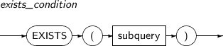 -
구성요소
구성요소 설명 EXISTS EXISTS 연산자의 오른쪽 subquery를 실행한 결과가 하나 이상의 로우를 반환하면 TRUE, 그렇지 않으면 FALSE를 반환한다. subquery subquery는 부질의를 의미한다. 자세한 내용은 “3.3.6. 부질의 연산식”을 참고한다.
IN 연산자는 왼쪽의 데이터 값이 오른쪽의 리스트 내에 포함되어 있는지 비교하는 연산자이다. IN 조건식의 문법은 다음의 도식과 같다. expr, expr_list, subquery는 “3.3. 연산식”에서 정의하였다.
IN 조건식의 세부 내용은 다음과 같다.
-
문법
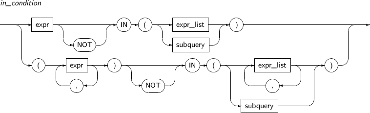 -
구성요소
구성요소 내용 expr expr은 일반적인 연산식을 의미한다. 자세한 내용은 “3.3. 연산식”을 참고한다. NOT 논리 연산자 NOT을 의미한다. 자세한 내용은 “3.2.2. 조건식에 포함되는 연산자”를 참고한다.
IN 앞에 NOT이 오면 IN 연산 결과에 NOT 연산을 수행한 결과를 반환한다.
IN IN 연산자는 왼쪽의 데이터 값이 오른쪽의 리스트 내에 포함되어 있는지 비교하는 연산자이다. expr_list expr 리스트를 의미한다. 자세한 내용은 “3.3.8. 리스트”를 참고한다.
expr_list 자체는 괄호에 둘러싸여 있어서는 안 된다.
subquery subquery는 부질의를 의미한다. 자세한 내용은 “3.3.6. 부질의 연산식”을 참고한다. -
예제
IN 조건식은 ' = ANY' 또는 '= SOME' 연산자를 이용한 그룹 조건식으로 변환할 수 있다.
예를 들어 다음의 두 줄은 같은 결과를 반환한다.
EMPNO IN (35, 54, 27, 69) EMPNO = ANY (35, 54, 27, 69)
IN 조건식이 = ANY 연산자가 포함된 그룹 조건식으로 변환될 수 있으므로, IN 연산자의 오른쪽 리스트 내에 NULL이 포함되어 있다면 IN 조건식은 항상 TRUE 또는 UNKNOWN을 반환한다. 반면에, NOT IN 조건식은 항상 FALSE 또는 UNKNOWN을 반환한다.
IS NULL 조건식은 왼쪽의 연산식의 결과가 NULL이면 TRUE, 그렇지 않으면 FALSE를 반환한다.
IS NULL 조건식의 세부 내용은 다음과 같다.
-
문법
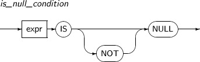 -
구성요소
구성요소 설명 expr expr은 일반적인 연산식을 의미한다. 자세한 내용은 “3.3. 연산식”을 참고한다. IS NULL IS NULL 연산자는 왼쪽의 연산식의 결과가 NULL이면 TRUE, 그렇지 않으면 FALSE를 반환한다. IS NOT NULL IS NOT NULL 연산자는 IS NULL 연산자 결과에 NOT 연산을 수행한 결과를 반환한다.
LIKE 조건식은 문자열 데이터 간의 패턴을 비교한다. LIKE 연산자는 등호 연산자와 마찬가지로 영문 대문자와 소문자를 구분한다. 예를 들어 문자열 'ABCDE'와 'abcde'는 서로 다른 문자열이며, 문자열 패턴 'A%'에 대하여 문자열 'ABCDE'는 대응되지만, 'abcde'는 대응되지 않는다.
LIKE 조건식의 세부 내용은 다음과 같다.
-
문법
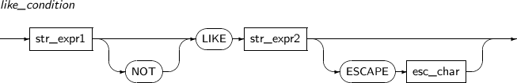 -
구성요소
구성요소 설명 str_expr1, str_expr2 str_exp1, str_exp2는 문자열을 반환하는 임의의 연산식이며, 0 이상의 길이를 갖는다. esc_char esc_char는 이스케이프 문자를 반환하는 길이가 1인 임의의 문자이다. LIKE LIKE 연산자는 문자열 데이터 간의 패턴을 비교하는 연산자이다. LIKE 연산자는 왼쪽에 오는 문자열이 오른쪽에 오는 문자열 패턴에 일치하면 TRUE를 반환한다. 만약 str_expr1, str_expr2 중의 어떤 하나라도 NULL이면, LIKE 연산자는 UNKNOWN을 반환한다. ESCAPE 와일드 카드(Wild Card)로 사용된 문자를 비교할 때는 이스케이프 문자를 사용한다. 두 문자열이 완전히 일치하는지 비교하는 데에는 등호(=) 연산자를 사용하는 반면, LIKE 연산자는 임의의 문자 또는 문자열에 대응되는 와일드 카드 문자열을 포함할 수 있다.
와일드 카드의 특징은 다음과 같다.
-
하나의 문자열 패턴에 하나 이상의 와일드 카드 문자를 포함할 수 있다.
-
와일드 카드로 사용된 문자를 비교할 때는 이스케이프 문자(escape character)를 사용한다.
예를 들어 'A_'로 시작되는 모든 문자열을 찾을 때는 문자열 패턴으로 'A\_%'를 사용한다. 이때, 백슬래시(\)가 이스케이프 문자로 사용된다. 이스케이프 문자로 사용된 백슬래시(\)를 비교하려면 이스케이프 문자를 두 번 반복해서 사용한다. 예를 들어 'C:\'로 시작되는 모든 문자열을 찾고자 한다면, 문자열 패턴으로 'C:\\%'를 사용한다.
이스케이프 문자는 정해져 있지 않으며 LIKE 연산자를 사용할 때마다 이스케이프 문자를 다르게 지정할 수 있다. 이스케이프 문자는 항상 길이가 1이어야 한다.
-
REGEXP_LIKE 조건식은 정규표현식으로 된 문자열 패턴을 비교한다는 점을 제외하고는 LIKE와 동일하다. 이 기능은 ICU 정규 표현식 표준을 따른다.
REGEXP_LIKE 조건식의 세부 내용은 다음과 같다.
-
문법
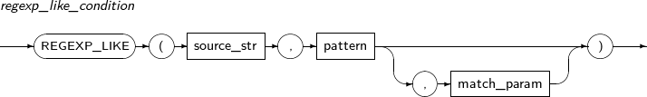 -
구성요소
구성요소 설명 source_str 문자열을 반환하는 임의의 연산식이다.
CHAR, VARCHAR2, NCHAR, NVARCHAR2 타입을 사용할 수 있다.
pattern 정규표현식으로 작성된 문자열을 반환하는 임의의 연산식이다.
CHAR, VARCHAR2, NCHAR, NVARCHAR2 타입을 사용할 수 있고, 만약 source_str과 타입이 다를 경우 source_str 타입으로 변환된다.
match_param 문자열을 반환하는 임의의 연산식으로 패턴을 검사할 방법을 설정한다.
다음과 같은 값을 사용할 수 있고, 여러 개를 동시에 지정할 수 있다.
-
'i' : 대소문자를 구분하지 않는다.
-
'c' : 대소문자를 구분한다.
-
'n' : 점(.)이 줄바꿈 문자도 포함한다.
-
'm' : 입력문자열이 한줄 이상이다.
-
'x' : 공백문자를 무시한다.
예를 들어 'ic'와 같이 상호충돌하는 값을 지정하였을 경우엔 마지막값만 사용한다. 즉, 'ic'는 대소문자를 구분한다.
-
-
예제
다음은 REGEXP_LIKE 조건식을 사용하는 예이다.
SQL> SELECT 1 FROM DUAL WHERE REGEXP_LIKE('12345', '3.?4'); 1 ---------- 1 1 row selected.